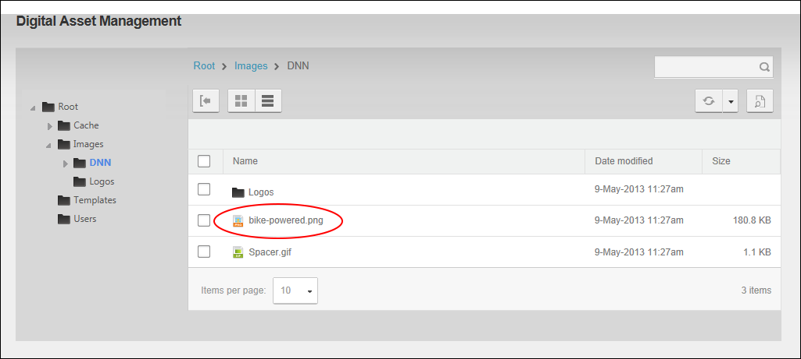
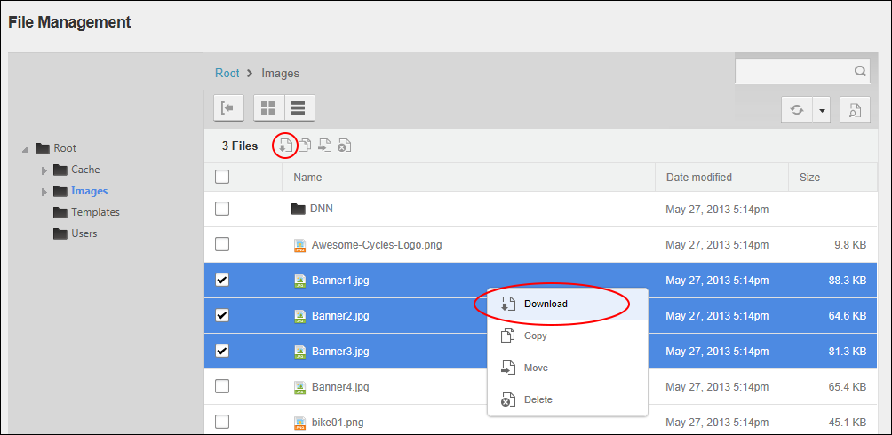

Downloading one or more Files
How to download one or more files from the Digital Asset Management Pro module. Any user (including anonymous users) who can view the Digital Asset Management Pro module download files.
- Navigate to Admin >
 File Management - OR - Go to a Digital Asset Management Pro module.
File Management - OR - Go to a Digital Asset Management Pro module.
- Navigate to and select the folder containing the file to be downloaded. See "Navigating to and Selecting Folders"
- Select and download files using one or these methods:
- To download a single file, either click the linked file name - OR - Right click on the file row and click the Download
 button from the drop down menu - OR - beside the file and then click the Download button in the Files Window Tool Bar.
button from the drop down menu - OR - beside the file and then click the Download button in the Files Window Tool Bar.

- To download multiple files,beside each file and then either click the Download button in the Files Window Tool Bar or right click on one of the selected file rows and then click the Download button from the drop down menu.

- Save the file to your computer.